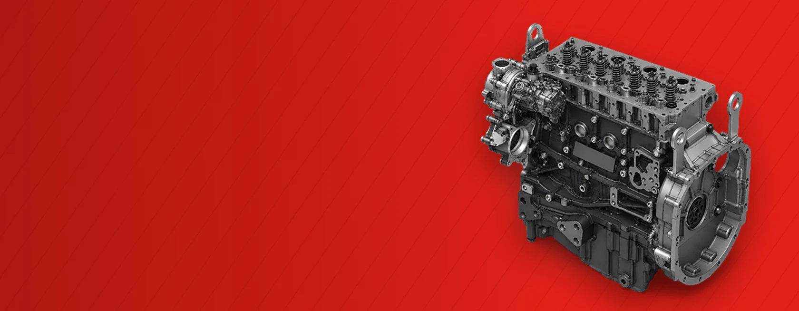

Home banners · F5 Long Block
Two versions for the slider on madsenpower.ca, each in English and French (FR links to the French landing page). Title, text and button are live text in the banner. Only the background is an image (1680×654, same size as the current banners). The button goes to the landing page.
1 · Original inside

Original inside.
The Farmall is Case IH. The engine is FPT. Replace the block with the original F5 Long Block.
Request a quote →TitleOriginal inside.
TextThe Farmall is Case IH. The engine is FPT. Replace the block with the original F5 Long Block.
ButtonRequest a quote →
madsenpower.ca/f5-long-block-fpt/
madsenpower.ca/f5-long-block-fpt/


2 · From the field to the job site
From the field to the job site.
One engine, two lines: the F5 Long Block fits the tractors and backhoes you already run.
Check your model →TitleFrom the field to the job site.
TextOne engine, two lines: the F5 Long Block fits the tractors and backhoes you already run.
ButtonCheck your model →
madsenpower.ca/f5-long-block-fpt/
madsenpower.ca/f5-long-block-fpt/


1 · Original inside (FR)
L’original à l’intérieur.
Le Farmall est un Case IH. Le moteur est un FPT. Remplacez le bloc par le F5 Long Block d’origine.
Demander une soumission →TitreL’original à l’intérieur.
TexteLe Farmall est un Case IH. Le moteur est un FPT. Remplacez le bloc par le F5 Long Block d’origine.
BoutonDemander une soumission →
madsenpower.ca/fr/f5-long-block-fpt/
madsenpower.ca/fr/f5-long-block-fpt/
2 · From the field to the job site (FR)
Du champ au chantier.
Un moteur, deux gammes : le F5 Long Block convient aux tracteurs et aux rétrocaveuses que vous utilisez déjà.
Vérifier mon modèle →TitreDu champ au chantier.
TexteUn moteur, deux gammes : le F5 Long Block convient aux tracteurs et aux rétrocaveuses que vous utilisez déjà.
BoutonVérifier mon modèle →
madsenpower.ca/fr/f5-long-block-fpt/
madsenpower.ca/fr/f5-long-block-fpt/